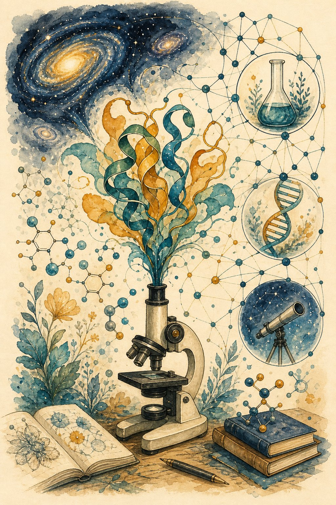

AI for science
AlphaFold cracked protein folding; materials, weather, and maths are next. Learn how AI accelerates discovery — and the validation bar that separates breakthroughs from press releases.

Figure 57.1 — AI compresses decades of search into days — but nature still grades the final exam.
1. The wins so far
| Domain | What AI did | Why it worked |
|---|---|---|
| Proteins (AlphaFold) | Sequence → 3D structure at experimental accuracy | Evolutionary data (MSAs) + geometry-aware nets + decades of PDB labels |
| Materials (GNoME et al.) | Millions of stable crystals predicted | DFT simulations as ground truth; search guided by learned energies |
| Weather (GraphCast) | 10-day forecasts beating physics models on many scores | 40 years of reanalysis data; GNNs on the globe grid |
| Maths/coding | Conjecture assistance, proof search, FunSearch-style discovery | Verifiers (proofs, tests) make trial-and-error rigorous |
2. The pattern: surrogate + search + validate
3. The validation bar (apply to every claim)
- Prospective, not retrospective: predict the future / unseen entities — not fit the past. Time-split, novel scaffolds, blind tests (CASP-style).
- Beat the domain baseline: not a strawman — the best physics/stats method experts actually use, tuned fairly.
- Uncertainty + ablations: error bars, which component mattered, failure analysis. “It works” without “when it breaks” isn’t science.
- Wet-lab / real-world close: synthesise the material, test the drug, run the field trial. Simulation-to-claim needs the last mile.
Science pitfalls
Data leakage across splits (homologous proteins in train+test!) · overclaiming vs weak baselines · p-hacking with seeds · ignoring negative results · dual-use blindness (protein design cuts both ways — screen + govern).
Short notes
Pattern: expensive truth → surrogate → massive search → real validation. Wins need data + geometry + verifiers. Bar: prospective tests, strong baselines, uncertainty, wet-lab close. Watch leakage (homology!), baselines, and dual-use.
Point notes
- Surrogate cheap, truth dear.
- Search millions, test dozens.
- Prospective beats retrospective.
- Homology leaks; split strictly.
- No validation = numerology.
MCQs
5 questions1. AlphaFold succeeded largely because of:
2. A surrogate model’s job is to:
3. Strongest validation of a materials-discovery claim:
4. Homologous proteins split across train and test cause:
5. “Beats the domain baseline” means comparing against:
Practice questions
P1. Review this claim: “Our GNN finds battery materials 10× faster (tested on 2019 data).” Your review?
Ask: time-split or random (leakage)? Baseline = best DFT workflow or a strawman? “Faster” wall-clock to validated material, or just more candidates? Demand: prospective predictions synthesised + measured, ablations, error bars, failure cases. Retrospective fit + weak baseline = reject.
P2. Design the data split for a protein-function predictor (avoid homology leakage).
Cluster by sequence identity (e.g., <30–40% between splits), split by cluster + deposition date (prospective holdout of newest structures). Report performance by novelty bands. Sanity check: near-duplicate detector across splits. Random splits here are scientific malpractice.
P3. Your lab wants “AI-designed enzymes.” Sketch the full loop incl. dual-use guardrails.
Surrogate (structure/function predictor) → generative search over sequences → in-silico filters (stability, specificity) → synthesise top-K → assay → feed back. Guardrails: screen against pathogen/toxin lists, refuse select-agent-adjacent work, institutional review, staged disclosure of methods. Capability + responsibility, one protocol.